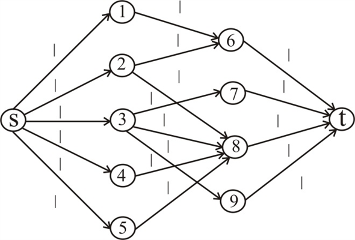
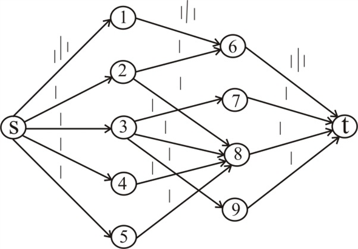
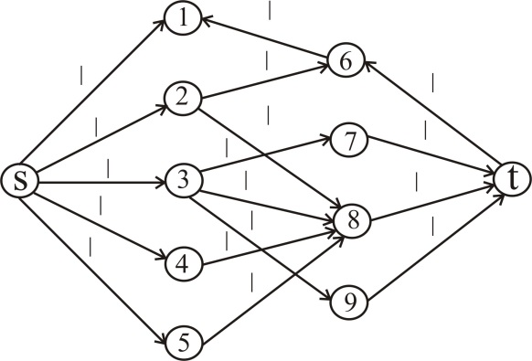
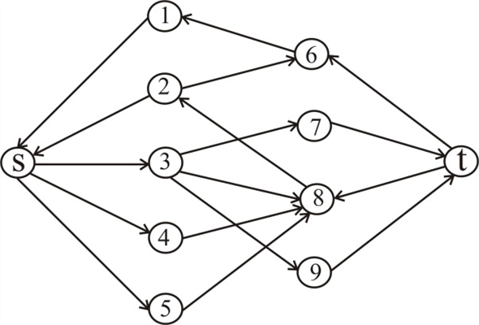
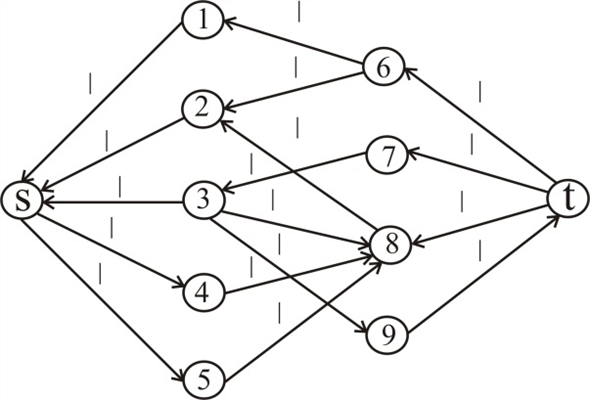
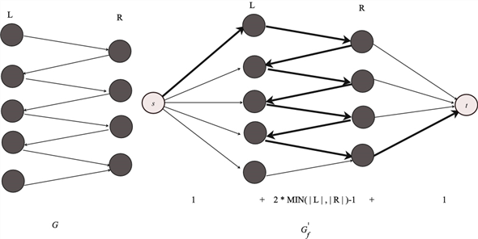
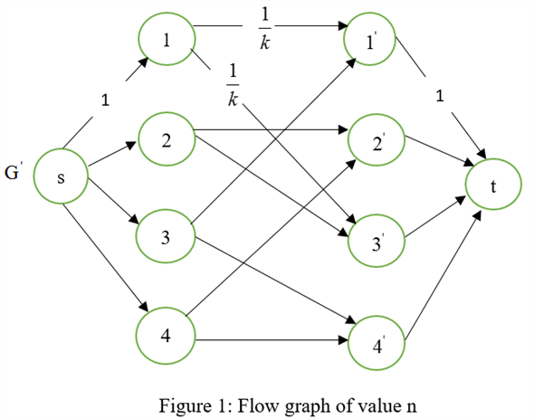

Running Ford-Fulkerson algorithm on the flow network:
Consider the flow network in figure 26.8(c) and assign capacity 1 unit for each edge.
Run the Ford-Fulkerson algorithm.
The initial flow network is,

For the Augmenting path:, the flow network and residual networks are as follows:
 
For the Augmenting path: , the flow network and residual networks are as follows:

For the Augmenting path: , the flow network and residual networks are as follows:

To prove the integrality theorem, first consider the direction of proof which says, “If the capacity function c takes only integral value, then there exists
• Initially, each edge traverses the path.
• So, the path induced by all edges is vertex-disjoint.
• By Ford-Fulkerson method, for any graph with integral capacities there must exist some maximum flow.
Consider a graph  and the
max-flow problem over the taken graph with the specified
capacities
and the
max-flow problem over the taken graph with the specified
capacities .
.
Base case:
• Initially if no iteration is performed then the value of maximum flow f is 0 so it is integral.
Induction Hypothesis:
• For iteration number, if capacity function c takes on only integer value, then the maximum flow produced by Ford-Fulkerson method is an integer.
Induction:
• At ith iteration, the previous iterations give the integral flow (from hypothesis). What this implies is that all residual capacities are also integers because residual capacity is calculated by subtracting flow from the capacity and addition and subtraction with integers result in integers.
• As a result, while finding the augmented path in this iteration the algorithm will find an integral bottleneck and pushes an integral flow on each edge of that corresponding augmented path. And as a result, all flows will be integral.
• Since the maximum flow along an edge cannot exceed its capacity function c,
So,
…… (1)
• Ford-Fulkerson method performed only addition, subtraction and
min operation so the augmenting path  for all
iteration has a
positive integral value.
for all
iteration has a
positive integral value.
So,
…… (2)
• Since all the capacities are integers and the maximum
flow is
positive integer number from equation (1),
is
positive integer number from equation (1),  is positive
integer and it is less than or equal to the capacity
function
is positive
integer and it is less than or equal to the capacity
function .
.
Hence, from the above explanation, it is proved that “if all
capacities are integers, then for all vertices u
and v, the value of is
an integer and thus the maximum flow
is also an integer ”.
Upper bound on length of an augment path:
Let G = (V,E) be a bipartite graph and be its corresponding flow network. Here, .
• Since G is a bipartite graph, it has no edges between any two vertices of L and no edges between any two vertices of R. Hence, does not have edges between any two vertices of L or R either.
• An augment path is a simple path from the source (s) to the sink (t) in the residual network. When the FORD-FULKERSON algorithm is executed on , it finds an augmenting path in each iteration.
• The augmenting path in has a starting edge that connects source (s) and any one vertex in L. Similarly, the augmenting path has a last edge that connects any one vertex in R and the sink t. The remaining edges of the augmenting path are the edges of G from L to R.
• Since a bipartite graph may have a path of maximum length of , the remaining edges in the augmenting path are . Thus, the augmenting path can be .
Therefore, the total length of an augment path is,
= starting edge + last edge+
Thus, the upper bound on the length of an augmenting path is bounded by .
Example:
Consider the following bipartite graph and an augmenting path in its corresponding flow graph.

In the above example, the length of the augment path =

The bipartite graph is divided into two subsets.
The two subsets are L and R such that each edge connect the nodes of the L to the nodes belongs to R.
If the bipartite graph has a perfect matching then.
Since, every graph which consist of d-regular bipartite graph G will have the perfect matching.
The proof is given below:
The size of the max matching is equal to the value of the max
flow of the graph .
.
Consider the following flow conditions:
The f represents the flow of the graph .
And the value of the flow is equal to n which is a perfect matching.
Hence, it is proved that for every d-regular graph, there is a perfect matching.
A feasible graph f with the value of n is shown below:
